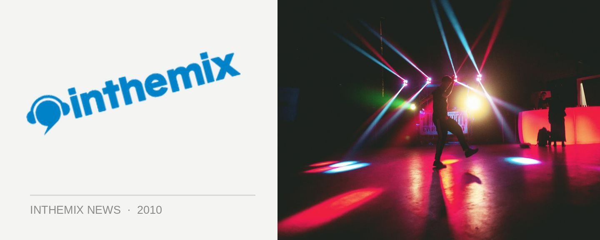

Video games invade Brisbane nightclub
Brisbane’s Fortitude Valley is known for having the highest concentration of clubs of anywhere in Australia, so it’s not surprising that a few shady characters would want to get in on the action. Namely, Mario, Sonic, Master Chief and the assortment of faux musicians wielding those crazy peripherals in DJ Hero and Guitar Hero. Opening in February in Fortitude Valley will be Mana Bar, the first club in the country to specialise in next-gen console gaming, and it’ll allow punters to play Nintendo Wii, Xbox 360 or PlayStation 3 in between them throwing back a few drinks.
Mana Bar director Guy Blomberg told news.com.au this week the club will offer a wide selection of games across five terminals, and that he’d be working on having high-profile titles available to play long before they were available to the general public. However, the focus will be on games with a ‘pick up and play’ style accessibility, rather than appealing to the hardcore gaming fraternity.
“We don’t want people grabbing a controller with 16 buttons and reading an instruction manual,” Blomberg said. “We just want people to come in, pick up a controller and have a play.”
So in between checking out Wolfgang Gartner at The Family, as well as Sebo K and Robert Babicz over at Empire – it couldn’t hurt to drop in and say hi to Mario and the gang, yeah?